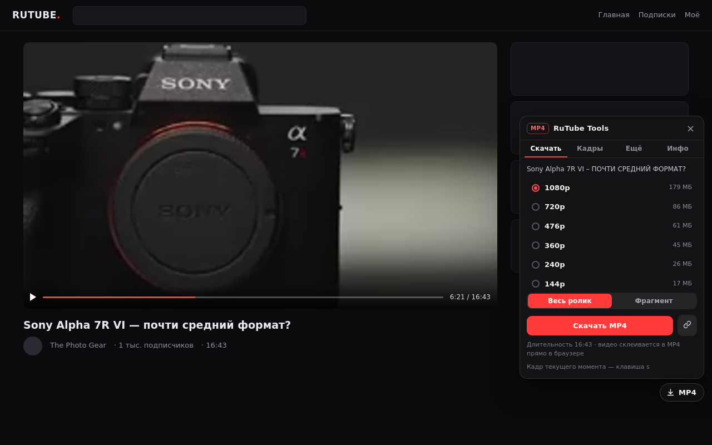
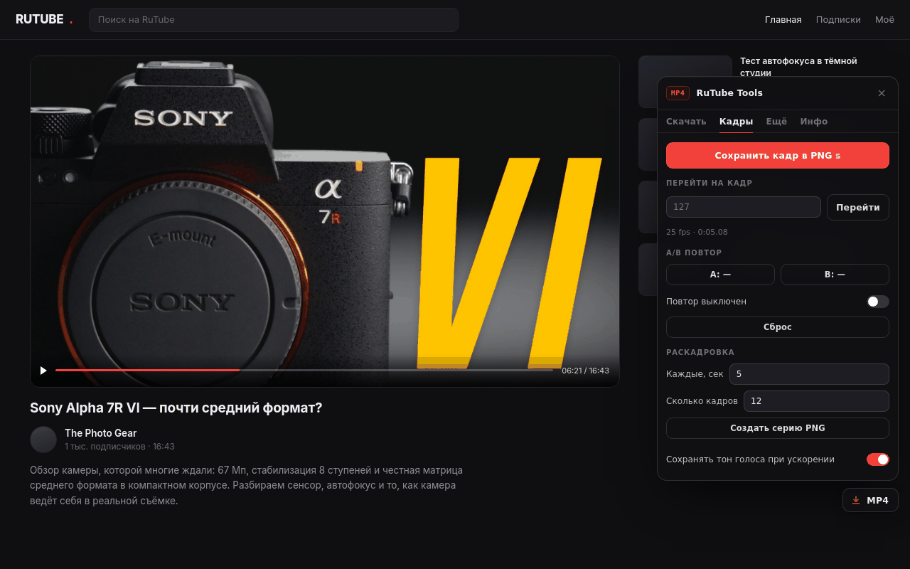
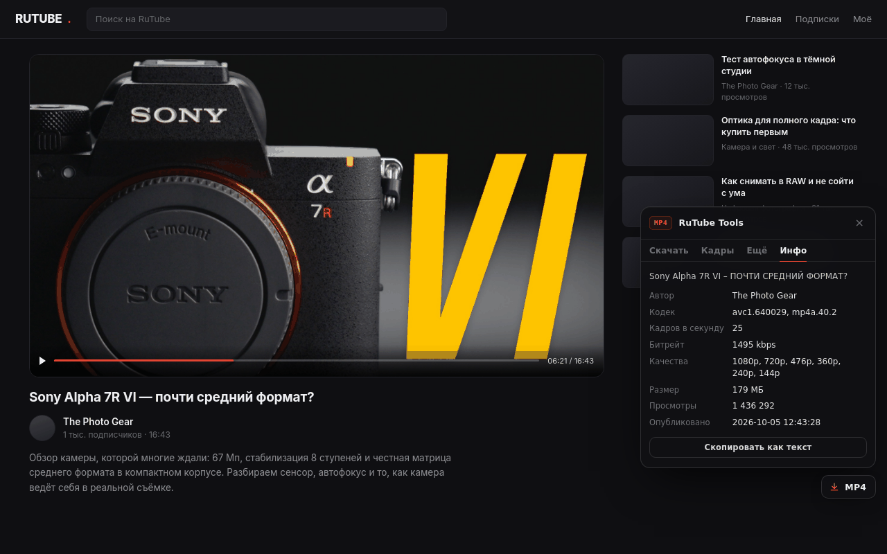
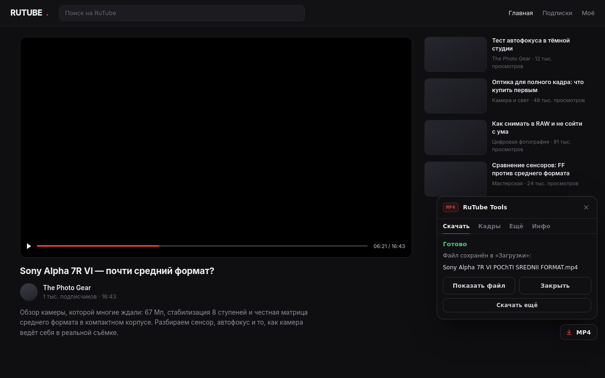

Что умеет расширение RuTube Tools
Четыре вкладки в одной аккуратной панели — и ноль настроек, чтобы начать.
MP4 целиком и фрагментом
«С 12:30 по 12:45» — точность до фрагмента потока. Склейка в обычный MP4 прямо в браузере.
Плейлисты
Очередь с паузой, диапазоном серий и отчётом об ошибках по каждому видео.
Кадры в PNG
Шаг по кадрам, сохранение кадра, раскадровка серией и A/B-петля.
Субтитры и обложка
.srt (включая авто-субтитры), .jpg обложка, главы, мини-плеер.
Зеркала CDN
RuTube отдаёт каждое качество с двух серверов — расширение само переходит на рабочее.
Как установить в Firefox, Chrome и Edge
Нужна одна минута.
Firefox
about:debugging#/runtime/this-firefox.xpi — кнопка MP4 появится на странице видео.Chrome / Edge / Яндекс
chrome://extensionsКак выглядит панель на странице видео
Тёмная панель, которая не спорит с дизайном RuTube.




Горячие клавиши для покадровой перемотки
Полный набор «как на YouTube» включается в настройках расширения.
Чего расширение не делает
Осознанные границы.
Не обходит DRM
Платные и защищённые видео не скачиваются — это осознанное ограничение.
Не пишет эфиры
Прямые трансляции не поддерживаются.
Не собирает данные
Нет ни аналитики, ни аккаунтов, ни серверов.
Вопросы и ответы
Коротко о том, что спрашивают чаще всего.
Как скачать видео с RuTube в MP4?
Откройте страницу видео, нажмите кнопку MP4 в правом нижнем углу, выберите качество и нажмите «Скачать MP4». Файл соберётся в браузере и появится в папке «Загрузки». Ничего устанавливать дополнительно не нужно.
Можно ли скачать только фрагмент видео?
Да. Во вкладке «Скачать» переключитесь на «Фрагмент», укажите начало и конец, например 12:30 и 12:45. Кнопка с часами подставит время из плеера. Границы привязываются к фрагментам потока (2–4 секунды), поэтому файл может начинаться на пару секунд раньше.
Как скачать весь плейлист RuTube?
Откройте страницу плейлиста (/plst/…) — кнопка станет PL. Выберите качество и диапазон серий, затем «Скачать плейлист». Видео загружаются по очереди с паузой, между ними можно поставить очередь на паузу или отменить её.
Как сохранить кадр в PNG?
Нажмите s — кадр текущего момента сохранится картинкой с таймкодом в имени файла. Для серии кадров откройте вкладку «Кадры» и задайте интервал раскадровки (до 120 кадров).
Как скачать субтитры с RuTube?
Вкладка «Ещё» → раздел «Субтитры» → «Скачать». Сохраняется файл .srt, включая авто-субтитры RuTube. Там же можно скачать обложку в JPG, главы и ссылку .m3u8.
Почему видео сохранилось как .ts, а не .mp4?
Так бывает с кодеками HEVC и AV1: собрать из них MP4 в браузере нельзя без перекодирования. Файл сохраняется как .ts и открывается в VLC. Видео в H.264 всегда собираются в обычный MP4.
Почему не скачивается прямой эфир или платное видео?
Прямые трансляции и видео с DRM-защитой не поддерживаются — это осознанное ограничение. Расширение не обходит защиту и работает только с открытыми видео.
Расширение что-то отправляет на серверы?
Нет. Ни аналитики, ни рекламы, ни собственных серверов: запросы идут только к RuTube и его CDN, без cookie. Настройки и позиция просмотра хранятся локально в браузере.
Работает ли в Chrome, Edge и Яндекс.Браузере?
Да. Для Chromium-браузеров есть отдельная сборка (.zip), устанавливается через «Режим разработчика» → «Загрузить распакованное».
Автор
Проект делает один человек, без компании и венчурных денег.